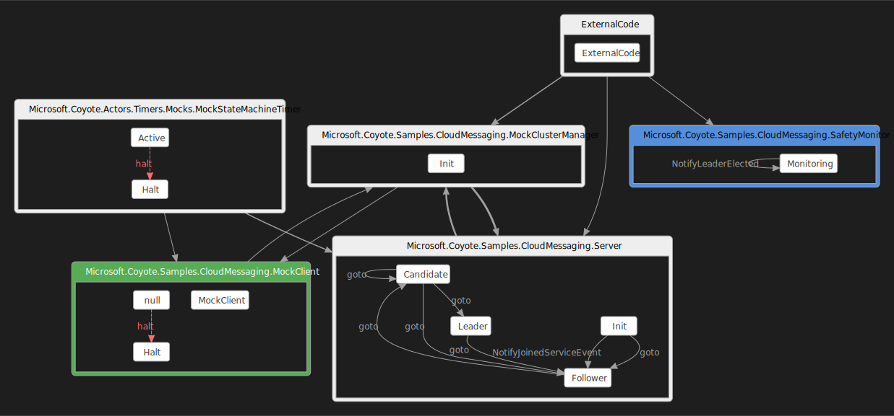
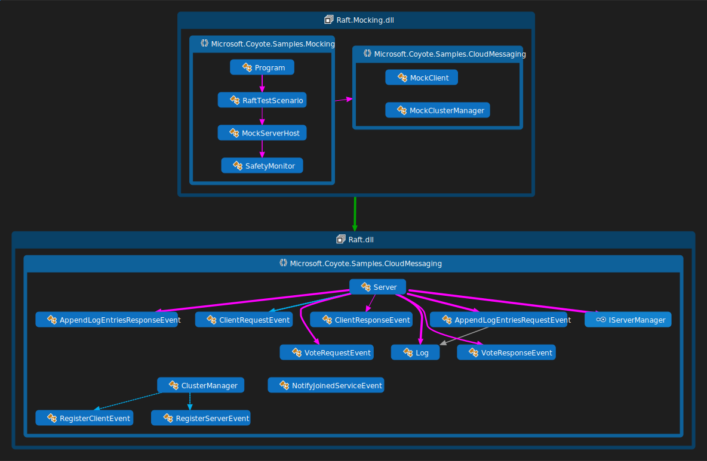

Raft consensus protocol with mocks for testing
In the previous example you created an Azure application that uses Coyote and performs messaging using Azure Service Bus. This is a great way to build a reliable application or service. But there is overhead in using an enterprise scale service bus, which limits our ability to fully test the state machine.
Clearly a fault-tolerant server consensus protocol needs to be thoroughly tested, which is what you
will do in this tutorial. First you will mock the Azure Service Bus which allows the Coyote
tester to perform thousands of tests per second and thereby find
bugs in the application code more efficiently.
Then you will use the coyote test tool to explore the code using different test strategies until
you achieve a high level of confidence that the code is rock solid.
What you will need
You will also need to:
- Install Visual Studio 2022.
- Install the .NET 8.0 version of the coyote tool.
- Be familiar with the
coyotetool. See using Coyote. - Clone the Coyote git repo.
Build the sample
You can build the sample by following the instructions here.
Run the Raft.Mocking application
Now you can run coyote test tool on the Raft.Mocking application:
coyote test ./Samples/bin/net8.0/Raft.Mocking.dll -i 1000 -ms 200 --coverage activity
You should see the test succeed with output like this, including a coverage report and graph:
. Testing ./Samples/bin/net8.0/Raft.Mocking.dll
Starting TestingProcessScheduler in process 34068
... Created '1' testing task.
... Task 0 is using 'random' strategy (seed:1388735316).
..... Iteration #1
..... Iteration #2
..... Iteration #3
.....
..... Iteration #900
..... Iteration #1000
... Emitting coverage reports:
..... Writing .\Samples\bin\net8.0\Output\Raft.Mocking.dll\CoyoteOutput\Raft.Mocking.dgml
..... Writing .\Samples\bin\net8.0\Output\Raft.Mocking.dll\CoyoteOutput\Raft.Mocking.coverage.txt
..... Writing .\Samples\bin\net8.0\Output\Raft.Mocking.dll\CoyoteOutput\Raft.Mocking.coverage.ser
... Testing statistics:
..... Found 0 bugs.
... Exploration statistics:
..... Explored 1000 schedules: 0 fair and 1000 unfair.
..... Hit the max-steps bound of '200' in 100.00% of the unfair schedules.
... Elapsed 61.3283634 sec.
. Done
Now you are seeing a longer more realistic test run. But if you create a --verbose log you will
see that in these 61 seconds the test actually tested over 2.4 million async operations!!
In this case you should see Total event coverage: 100.0% which is a great sign, this means every
possible event has been sent and received by every state of every state machine that you tested here.
This is not the same thing as 100% code coverage, but it is a higher level of abstraction on
coverage. Both are important.
The coverage report has a separate section for each Actor or StateMachine that was covered by
the test. It then lists the overall event coverage as a percentage, then lists the details of each
State. For actors there will be only one state listed, matching the name of the Actor type.
For example, the Server section reports the Candidate state like this:
State: Candidate
State event coverage: 100.0%
Events received: Microsoft.Coyote.Actors.Timers.TimerElapsedEvent, AppendLogEntriesRequestEvent,
AppendLogEntriesResponseEvent, VoteRequestEvent, VoteResponseEvent
Events sent: AppendLogEntriesResponseEvent, VoteRequestEvent, VoteResponseEvent
Previous states: Candidate, Follower
Next states: Candidate, Follower, Leader
This shows 100% coverage for the state, meaning all expected events have been received, it lists
those under Events received, and it also lists all Events sent while in this state. Lastly it
shows all recorded state transitions in and out of this state. Previous states are the states
that transitions to the Candidate state and Next states are the states that the Candidate
state went to using RaiseGotoStateEVent transitions. The key thing to look for here is that
during this test run some of the Server state machines did make it to the Leader state.
Notice because of the mocking of Azure API’s this application is now able to run 200 steps per iteration and a thousand iterations pretty quickly, much faster than if all those messages were going to Azure and back. This means the test can quickly explore every kind of asynchronous timing of events to find all the bugs. Not only is it faster but it is also systematic in how it explores every possible interleaving of asynchronous operations. This systematic approach ensures the test doesn’t just test the same happy paths over and over (like a stress test does) but instead it is more likely to find one bad path where a bug is hiding.
The --coverage report also generates a DGML diagram of all the messages sent during the test. You
can browse these graphs using Visual Studio. The file name in this case is Raft.Mocking.dgml and
it will look something like this:

Here you see all the Actor objects in green, and Monitor in blue and StateMachine and
ExternalCode objects in gray. You can see that all the states were explored in the Server,
including the Leader state. The MockStateMachineTimer is a helper Actor provided as a mock
implementation CreateTimer and CreatePeriodicTimer API’s.
There are many different coyote test command line options you can play with to test different things
and really increase your confidence level in the code you are testing. For example there are 4 different
test scheduling options you can play with:
| Option | Description |
|---|---|
--strategy random |
Choose the random scheduling strategy (this is the default) |
--strategy prioritization --strategy-value N |
Choose the priority-based scheduling strategy with N maximum number of priority switch points |
--strategy fair-prioritization --strategy-value N |
Choose the fair priority-based scheduling strategy with N maximum number of priority switch points |
--strategy portfolio |
Choose the portfolio scheduling strategy |
These options change how coyote test explores the large state space of possible schedules for your
async operations. The last option is interesting because it allows you to test many different
scheduling strategies at once:
coyote test ./Samples/bin/net8.0/Raft.Mocking.dll -i 1000 -ms 200 --coverage activity -s portfolio
When you use this the test will print the chosen strategies at the top of the test output:
... Task 3 is using 'fair-prioritization' strategy (seed:3922897588).
... Task 4 is using 'probabilistic' strategy (seed:3469760925).
... Task 2 is using 'probabilistic' strategy (seed:1642014516).
... Task 1 is using 'fair-prioritization' strategy (seed:1466235705).
... Task 0 is using 'random' strategy (seed:3931672516).
You can also increase the number of iterations to 10,000,000 if you want to, then come back tomorrow and see how it did. Clearly, you should now see that Coyote makes it possible to thoroughly test your code automatically, without you having to write a million individual boring unit tests that test every little possibility in terms of sending and receiving messages.
Manual unit testing has a place in software engineering, but what Coyote does is more powerful. With Coyote you can explore a very large number of combinations and find lots of bugs which greatly increases confidence in your code.
One interesting thing about Coyote is that every time you run a test you might explore a slightly
different space and so continuous integration testing where you run tests on every checkin, or
longer test suites every night, has a higher chance of finding that one ridiculously embarrassing
bug before you go live with your service. You might wonder, if there is randomness in the testing,
how will you reproduce bugs that are found? The answer lies in the random seed printed above
(seed:3469760925). This is all you need to re-run an identical test, so interesting random seeds
can also become your regression test suite. Imagine, an entire interesting regression test is
simply one integer. There is one restriction to this, if the product code you are testing changes
the set of non-deterministic choices, then prior saved random seeds are no longer usable, but you
can quickly build a new set by simply running more tests. Comparing this with the cost of
maintaining large static regression test suite code bases, this is quite an improvement.
Instead of building lots of little manual unit tests, you will find that when using Coyote your time
is better spent designing interesting mocks that accurately model all the kinds of weird things that
can happen when interacting with external systems. You also should write lots of interesting
specifications throughout these mocks that use Assert to ensure everything is running properly
during the test. You also should use the Monitor pattern to ensure all the global invariants you
care about in your system remain true no matter what a specific test run is doing.
Design
The following diagram illustrates how the MockClient actor sends ClientRequestEvents, and how
the MockClusterManager subclasses from ClusterManager. There is also a MockServerHost that
implements the IServerManager interface and a RaftTestScenario class which sets everything up.
Notice that the Server code you are testing here is the exact same production ready code you used
in the Raft actor service (on Azure) tutorial. You should now see that this is very
cool. You have switched the Server from running on Azure to running locally with a bunch of
mocks and didn’t have to change one line of Server code.

For this test we also inject a SafetyMonitor into the process by simply registering it on the
runtime like this:
runtime.RegisterMonitor<SafetyMonitor>();
This enables the monitor so that when the MockServerHost sends the NotifyLeaderElected
it can keep track and make sure there is only one leader per term.
The MockClusterManager implementation is very simple, since at test time all Server instances
are in the same process, a broadcast operation is simply a for-loop over those servers, sending the
broadcast event to each one using SendEvent.
The MockServerHost is a bit tricky, since all the Server actors have to be created before you
start them using the NotifyJoinedServiceEvent otherwise the MockClusterManager might be too
quick and start sending events to a Server instance before it is ready. Now you can see why the
IServerManager interface was designed this way in the original Raft.Azure example.
The RaftTestScenario then creates all the actors needed to run the test including all the mock
actors and the real Server instances. This is all relatively simple compared to the original
Raft.Azure example that was also dealing with setting up the Azure Service Bus.
This mock test setup is able to fully test the Server implementation and get good coverage. The
IServerManager interface and the abstract ClusterManager state machine where originally designed
with testability in mind and that’s what makes this easy mocking of the external pieces possible.
The test also includes a coyote Monitor called SafetyMonitor which provides a global invariant
check, namely checking there is never more than one Server that is elected to be the Leader at
the same time. The Monitor class in Coyote shows how to inject additional work that you want to do
at test time only, and have almost no overhead in the production code. Hopefully you agree it is
pretty easy to create a monitor and that monitoring like this is a powerful concept that adds
a lot of value to your Coyote testing process.
Summary
In this tutorial you learned:
-
How to mock external systems like Azure Service Bus to make a Coyote test run fast.
-
How to use the
coyote testcommand line to explore different test strategies. -
How to read a Coyote coverage report and view the coverage graph.
-
How to inject test logic like the
SafetyMonitorin to thecoyote testscenario that monitors the overall correctness of your system in a way that has minimal overhead in your production code. -
How to think about model based testing using random seeds and integrate that into your continuous integration testing process.
You can also explore the Raft.Nondeterminism.dll version of this sample that injects a bug in the
system by randomly sending duplicate VoteRequestEvents. Then you can see how the coyote test
tool is able to spot the resulting bugs because of the SafetyMonitor.